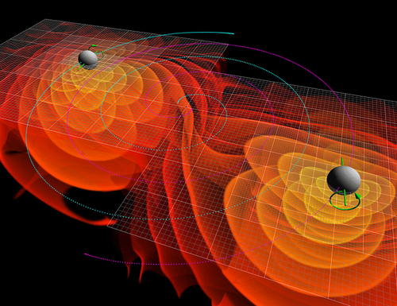

Jupyter notebooks¶
Objectives
Know what it is
Create a new notebook and save it
Open existing notebooks from the web
Be able to create text/markdown cells, code cells, images, and equations
Know when to use a Jupyter notebook for a Python project and when perhaps not to
Instructor note
15 min discussion/demo
15 min exercise
5 min summary
[this lesson is adapted from https://coderefinery.github.io/jupyter/01-motivation/]
Motivation for Jupyter notebooks¶

One of the first notebooks: Galileo’s drawings of Jupiter and its Medicean Stars from Sidereus Nuncius. Image courtesy of the History of Science Collections, University of Oklahoma Libraries (CC-BY).¶
Code, text, equations, figures, plots, etc. are interleaved, creating a computational narrative.
The name “Jupyter” derives from Julia+Python+R, but today Jupyter kernels exist for dozens of programming languages.
Where we want to get at the end¶
{kind=link}

Discovery of gravitational waves.¶
As a case example, let us have a look at the analysis published together with the discovery of gravitational waves. This page lists the available analyses and presents several options to browse them.
A quick look at short segments of data can be found at https://github.com/losc-tutorial/quickview
The notebook can be opened and interactively explored using Binder by clicking the “launch Binder” button.
How does the Binder instance know which Python packages to load?
For more examples, head over to the Gallery of interesting Jupyter Notebooks.
Our first notebook¶
We all open up a notebook and rename it
Together we create few cells and run them
Most important shortcut: Shift + Enter, to run current cell and create a new one below
We create a function to compute the mean (we will make sense of the Python code later)
def arithmetic_mean(sequence): s = 0.0 for element in sequence: s += element n = len(sequence) return s / n
In a different cell we call the function
arithmetic_mean([1, 2, 3, 4, 5])
Save the notebook
Exercises¶
Exercise Jupyter-1: create a notebook (15 min)
Open a new notebook (on Windows: open Anaconda Navigator, then launch JupyterLab; on macOS/Linux: you can open JupyterLab from the terminal by typing
jupyter-lab)Rename the notebook
Create a markdown cell with a section title, a short text, an image, and an equation
# Title of my notebook Some text.  $E = mc^2$
Create a code cell where you define and call the
arithmetic_meanfunction (above)Run all cells
Use cases for notebooks¶
[adapted from https://coderefinery.github.io/jupyter/01-motivation/#common-use-cases]
Really good for linear workflows (e.g. read data, filter data, do some statistics, plot the results)
Experimenting with new ideas, testing new libraries/databases
As an interactive development environment for code, data analysis, and visualization
Interactive work on HPC clusters
Sharing and explaining code to colleagues
Teaching (programming, experimental/theoretical science)
Learning from other notebooks
Keeping track of interactive sessions, like a digital lab notebook
Supplementary information with published articles
Slide presentations using Reveal.js
Pitfalls and situations where notebooks can be less useful¶
Programs with non-linear code flow
Large codebase (however it can make sense to use Jupyter as interface to the large codebase and import the codebase as a module)
You cannot easily write a notebook directly in your text editor (but you can do that with R Markdown)
Good practices¶
Run all cells before sharing/saving to verify that the results you see on your computer were not due to cells being run out of order.
We will demonstrate why this is important after we have discussed a bit of Python (next episode).